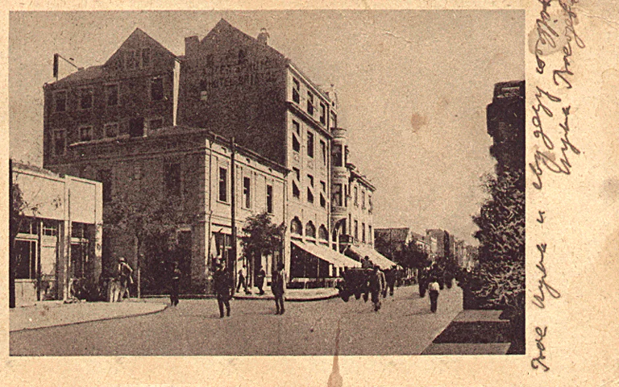
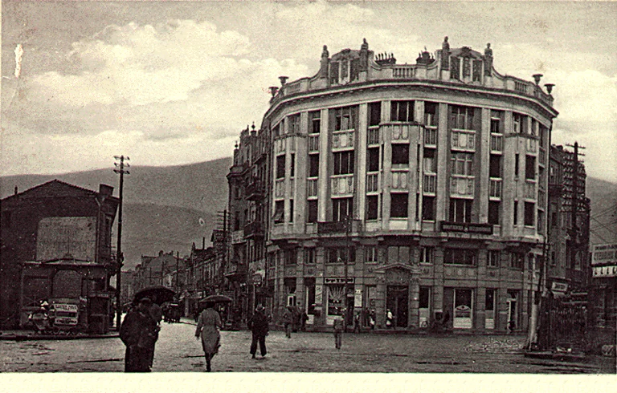
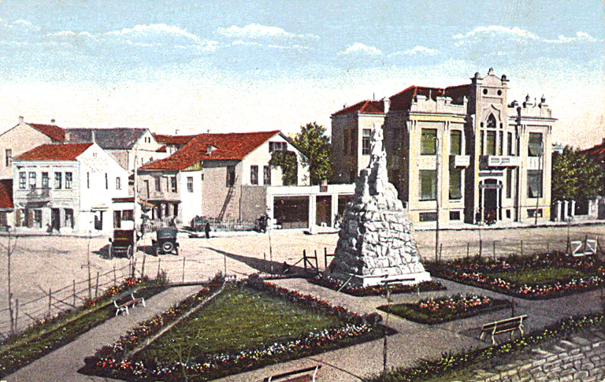
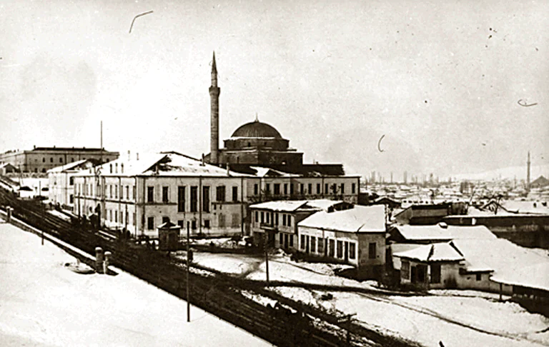
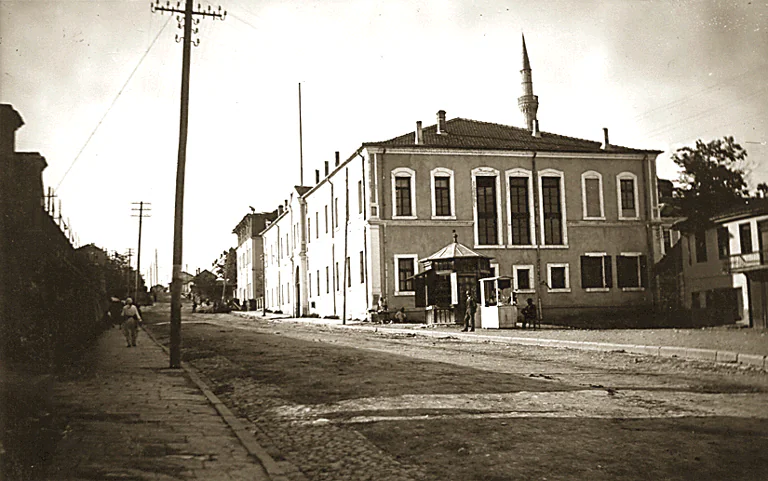
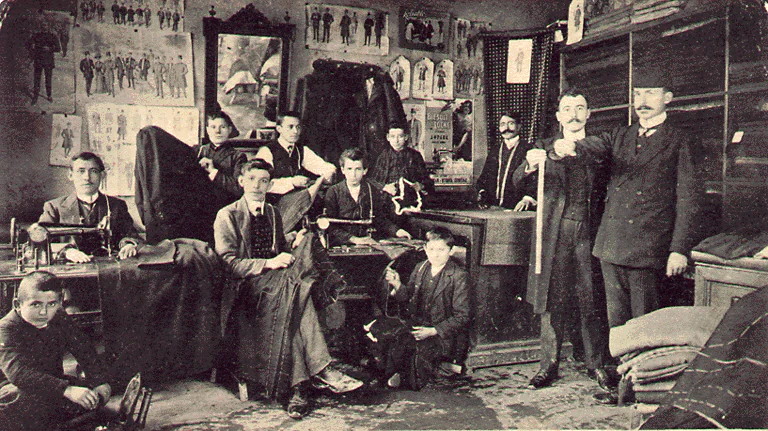
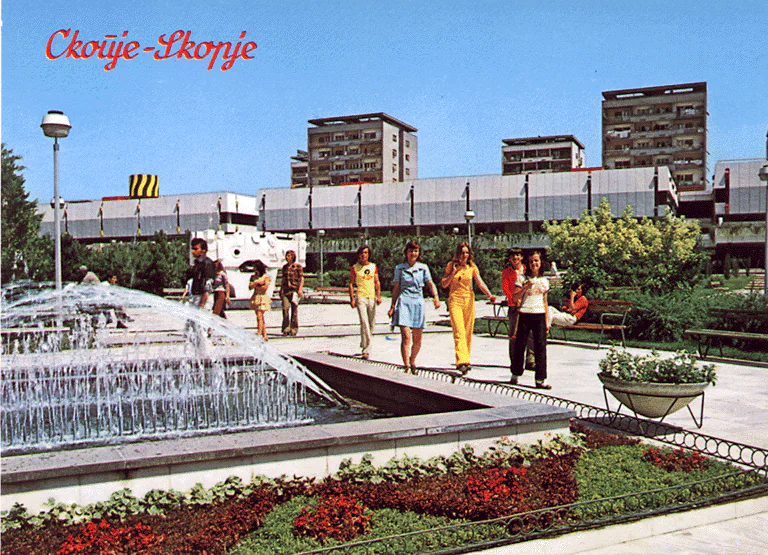

Skoplje 1916. - 1917. panorama 1
Dokumenti iz Balkanskih ratova
- Godina
- 1916-1917
- Trajanje
- 00:11

Hotel Turati. Podignut krajem 19. stoljeća.

Fotografija je snimljena sa zgrade starog željezničkog kolodvora - današnjeg Muzeja grada Skoplja, koji je izgrađen 1873. godine u doba Osmanskog Carstva. U prednjem planu je prilaz kolodvoru s ograđenim zelenim površinama. U nastavku je glavna ulica koja vodi prema trgu. Na početku ulice s lijeve strane je hotel „Rusija“.

Pogled prema glavnoj ulici „Makedonija“. Slavoluk je postavljen u čast nekog važnog gosta. Lijevo od njega je hotel „Rusija“. - početak 20. stoljeća.

Zgrada suda, 1920-ih.

Zgrada suda, 1920-ih.

Zgrada Židovske općine - 1920-ih.

Dom srpskih sestara - 1920-ih.

Skoplje nakon 1930. godine. Pogled na glavnu ulicu, od današnjeg Muzeja grada Skoplja prema trgu. Dvije više zgrade su: Grand hotel „Bristol“, a desno uz njega hotel „Srpski kralj“. Arhitektura zgrada ima eklektički oblikovane elemente.

Hoteli Srpski kralj i Bristol. - 1920-ih.

Kuća braće Čitkušev. - 1920-ih

Kuća ljekarnika Ristića, popularno nazvana Ristićeva palača. Lijevo na fotografiji vidi se dio hotela „Beli orao“. (1920-ih)

Ristićeva palača - oko 1925. godine.

Ristićeva palača. Lijevo na fotografiji vidi se dio hotela „Beli orao“. (oko 1925. godine)

Hotel „Pariz“. Snimljeno je dvorište hotela, u kojem su se nalazile pivnica i slastičarnica. - 1920-ih

Hotel „Moskva“ - 1930-ih

Osmanska banka - oko 1910.

Mali trg, odmah uz Kameni most, na lijevoj obali Vardara. U prednjem planu je spomenik palim borcima u Balkanskim ratovima, a desno straga Osmanska banka.
- 1920-ih

Novi hotel „Sarajevo“ u izgradnji - na trgu. Lijevo od njega je kazališna kavana, a iznad nje stari hotel „Sarajevo“. - 1920-ih

Trg s hotelom „Sarajevo“ i popularnom kavanom „Marger“, omiljenim mjestom građana Skoplja. Lijevo od hotela „Sarajevo“ bio je hotel „Ujedinjenje“. U prednjem planu, na pločniku, sjedi prodavač đevreka. (oko 1935. godine)

Vojarna skopske tvrđave - Kale. - 1920-ih

Zgrada zatvora u Skoplju. Nalazila se u neposrednoj blizini Mustafa-pašine džamije. - kraj 19. stoljeća

Hukumat (općina). U nastavku je turska pošta, a iza nje Mustafa-pašina džamija. - 1920-ih

Hukumat (općina). U nastavku je turska pošta. U pozadini se vidi Mustafa-pašina džamija. - 1920-ih

Hukumat (općina). U nastavku je turska pošta, a iza nje Mustafa-pašina džamija. - 1920-ih

Zgrada financijske inspekcije. Danas je u njoj smješten Institut za plemenite metale. U tursko doba bio je to „Hukumat“ (općina). - 1930-ih

Gimnastička dvorana ili skopski sokolski dom „Sokolana“, izgrađen 1936. godine.

Skopski sokolski dom izgrađen 1936. godine.

Vojna bolnica „Crveni polumjesec“ - kraj 19. stoljeća. Zgrada se odlikuje akademskim arhitektonskim stilom s renesansnim i baroknim oblicima.

Vojna bolnica „Crveni polumjesec“ podignuta krajem 19. stoljeća. Zgrada se odlikuje akademskim arhitektonskim stilom s renesansnim i baroknim oblicima. (1920-ih)

Vojna bolnica „Crveni polumjesec“ podignuta krajem 19. stoljeća.

Vojna bolnica „Crveni polumjesec“ podignuta krajem 19. stoljeća.

Pogled na glavnu ulicu, od današnjeg Muzeja grada Skoplja prema trgu. Krangova palača, s klasičnim i baroknim elementima. U njoj je bilo kino „Kapitol“. U pozadini fotografije vidi se Časnički dom. - 1930-ih

Sanatorij „Vardar“ - 1930-ih

Kuća zubara dr. Rubena, koji je imao ordinaciju uz sam Kameni most s lijeve strane Vardara. - 1930-ih

Poštanski dom. - 1930-ih

Narodna banka, izgrađena prema projektu arhitekta B. Nestorovića. Arhitektonski izražen pojednostavljeni akademizam u oblikovanju dekorativnih elemenata i utjecaji modernizma. - 1930-ih.

Narodna banka noću. Ispred nje dio šetališta građana Skoplja, popularno nazvanog „Korzo“. - 1930-ih.

Narodna banka, izgrađena prema projektu arhitekta B. Nestorovića. Arhitektonski izražen pojednostavljeni akademizam u oblikovanju dekorativnih elemenata i utjecaji modernizma. Desno je Gospodarska trgovačka komora (arhitekt M. Zloković) - 1930-ih.

Kameni most s Narodnom bankom u pozadini. - 1930-ih

Narodna banka, Časnički dom i dio Kamenog mosta. - 1930-ih

Narodna banka s Časničkim domom i Kamenim mostom. Fotografija je snimljena s lijeve obale Vardara, s malog trga, gdje je bilo stajalište fijakera. (1930-ih)

Stara ženska gimnazija. - 1930-ih

Termoelektrana u Skoplju - 1910. godina

Unutrašnjost termoelektrane u Skoplju - 1910. godina

Tvornica lijekova. - 1920-ih.

Prva benzinska postaja „Shell“ u Skoplju. - 1927. godina

Vježba skopskih vatrogasaca. - 1930-ih.

Tipična krojačka radionica u staroj čaršiji - 1920. godina

Stajalište prijevoznika s zaprežnim kolima. - 1920-ih

Tvornica za preradu kože u Skoplju. - 1920-ih.

Kamenolom u Skoplju, u Kiseloj vodi, na padinama Vodna. - 1920-ih.

Zračna luka u blizini Skoplja - 1933. godina. Nalazila se na današnjem mjestu naselja Aerodrom i Jane Sandanski.

Hipodrom u Skoplju. (kraj 1920-ih)

Kino-dvorana „Vardar“ - 1940-ih. Između dvaju svjetskih ratova u Skoplju su postojala ova kina: Zrinjski, Apolo (izgorjelo 1930., a na njegovu mjestu izgrađeno je kino Korzo), Balkan, Vardar, Kapitol, Uranija, Avala.

Spomenik palim učenicima u Prvom svjetskom ratu - 1920-ih.

Gradska ljekarna. - 1932. godina.

Zavod za osiguranje radnika (današnja gradska bolnica). - 1930-ih

Sobranje R. Makedonije, 1940-ih. U tim je godinama ondje bila Oblasna direkcija.

Današnje Sobranje R. Makedonije - godine prije potresa.

Stara - Nova banja. Dio Skoplja na mjestu današnjeg sveučilišta „Sv. Ćiril i Metod“

Zgrada Uprave unutarnjih poslova, izgrađena 1950-ih. Kasnije su u njoj smješteni Pravni, Ekonomski i Filozofski fakultet te rektorat.

Sudska palača, odmah nakon potresa. Lijevo do nje je stara džamija „Elen kapan“.

Zgrada Elektroprivrede (1962. - 1964.), u neposrednoj blizini gradskog trga.

Gradski trgovački centar. Izgradnja je službeno započela 11. listopada 1969., a 27. travnja 1973. pušten je u rad središnji dio, od kada kompleks normalno radi.

Gradski trgovački centar (1969. - 1973.) s dijelom parka „Žena borac“.

Gradski trgovački centar (1969. - 1973.) s uređenim zelenim prostorom parka „Žena borac“.

Dokumenti iz Balkanskih ratova
Filmski pregled br. 21
 Akvadukt4 razglednice
Akvadukt4 razglednice Kale30 razglednica
Kale30 razglednica Mostovi60 razglednica
Mostovi60 razglednica Kej58 razglednica
Kej58 razglednica Trg46 razglednica
Trg46 razglednica Građevine66 razglednica
Građevine66 razglednica Kršćanski hramovi19 razglednica
Kršćanski hramovi19 razglednica Muslimanske građevine33 razglednice
Muslimanske građevine33 razglednice Časnički dom29 razglednica
Časnički dom29 razglednica Kazalište28 razglednica
Kazalište28 razglednica Željeznički kolodvor13 razglednica
Željeznički kolodvor13 razglednica Škole36 razglednica
Škole36 razglednica Parkovi12 razglednica
Parkovi12 razglednica Tržnice18 razglednica
Tržnice18 razglednica Ulice38 razglednica
Ulice38 razglednica Panorama I60 razglednica
Panorama I60 razglednica Panorama II30 razglednica
Panorama II30 razglednica Kolaži55 razglednica
Kolaži55 razglednica Poplave9 razglednica
Poplave9 razglednica Potres27 razglednica
Potres27 razglednica Skoplje 2000.26 razglednica
Skoplje 2000.26 razglednica